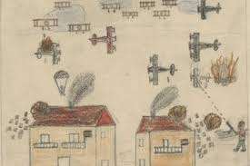
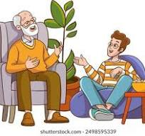

El proyecto se centra en el estudio de la posguerra española y la sociedad durante el franquismo, abordando este periodo histórico desde una perspectiva social y humana. A través del análisis de testimonios y recuerdos de personas mayores, el alumnado podrá comprender cómo se vivía en esa época en la vida cotidiana, conectando los contenidos históricos con la memoria personal y familiar. De esta forma, se trabaja la historia no solo desde los acontecimientos políticos, sino también desde la memoria colectiva y la experiencia de las personas.

¿A qué nivel va dirigido?
La Situación de Aprendizaje está dirigida al alumnado de 4.º de Educación Secundaria Obligatoria, dentro de la materia de Geografía e Historia. En este curso se abordan contenidos relacionados con la historia contemporánea de España , incluyendo el periodo de la posguerra y la dictadura franquista, lo que permite contextualizar el proyecto dentro del currículo oficial. Además, el alumnado de este nivel cuenta con la madurez suficiente para reflexionar sobre procesos históricos complejos y desarrollar pensamiento crítico.
¿Cuánto tiempo nos va a ocupar? (Temporalización aproximada)
El proyecto se desarrollará a lo largo de seis sesiones presenciales en el aula, complementadas con trabajo autónomo fuera de clase para la realización de las entrevistas y la recopilación de información. Durante estas sesiones se trabajarán diferentes fases del proyecto: introducción y contextualización histórica, preparación de las entrevistas, análisis de los testimonios recogidos y elaboración del producto final.
¿En qué materias se trabajará? (Materia o materias implicadas)
La materia principal implicada es Geografía e Historia, ya que el proyecto se enmarca en el estudio de la posguerra española y la sociedad durante el franquismo.
Además, se establece una conexión con la materia de Digitalización, ya que el alumnado utilizará herramientas digitales para organizar la información obtenida en las entrevistas y presentar los resultados mediante presentaciones, relatos digitales o materiales audiovisuales.
¿En qué idioma se expresa la SDA?
El proyecto se desarrollará en castellano, ya que es la lengua vehicular del centro y permite trabajar de forma adecuada la comprensión de los contenidos históricos, la elaboración de entrevistas y la redacción de los relatos históricos derivados de los testimonios recogidos.
¿Qué tenéis que hacer? Descripción general de lo que se pretende que el alumnado aprenda o trabaje (basada en la rutina de pensamiento)
El proyecto pretende que el alumnado comprenda el periodo de la posguerra española desde una perspectiva histórica y social, combinando el estudio de los contenidos curriculares con el análisis de testimonios reales. A partir de la rutina de pensamiento utilizada en la reflexión previa (modelo de Gibbs), se plantea una metodología que fomente la participación activa, el uso de herramientas digitales y la conexión entre el conocimiento histórico y la experiencia personal de las personas.
Durante el desarrollo del proyecto, el alumnado investigará el contexto histórico de la posguerra, preparará entrevistas a personas de su entorno que puedan aportar recuerdos o relatos sobre ese periodo y analizará la información obtenida. Posteriormente, contrastará estos testimonios con los contenidos trabajados en clase, reflexionando sobre la relación entre memoria personal e interpretación histórica.
De esta manera, el alumnado desarrollará habilidades propias del pensamiento histórico, como la interpretación de fuentes, el análisis crítico de la información y la construcción de narrativas históricas, al mismo tiempo que mejora su competencia digital mediante el uso de herramientas tecnológicas para organizar y presentar la información. El proyecto también fomenta valores como el respeto, la empatía y el diálogo intergeneracional, permitiendo comprender que los procesos históricos tienen una dimensión humana que conecta el pasado con el presente.
